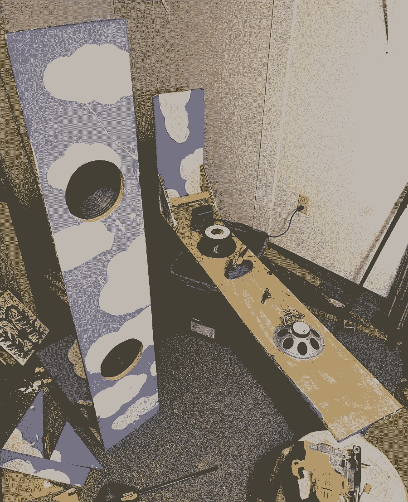
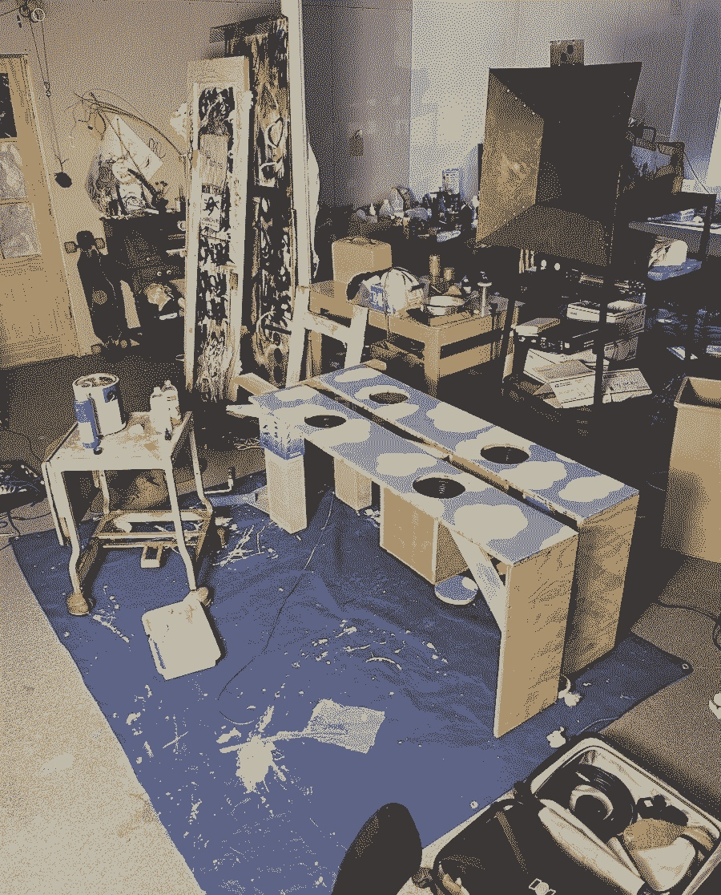
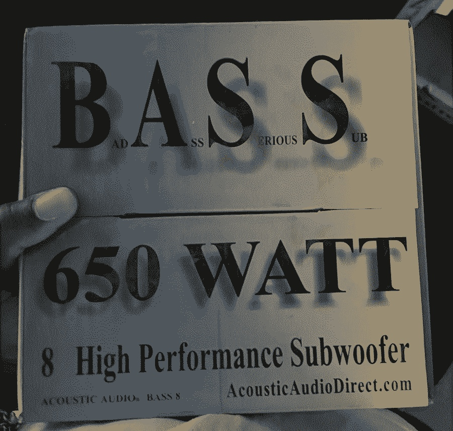
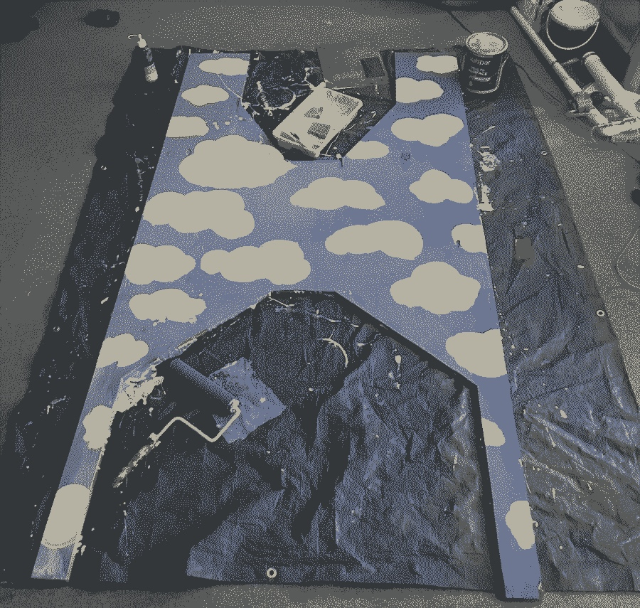
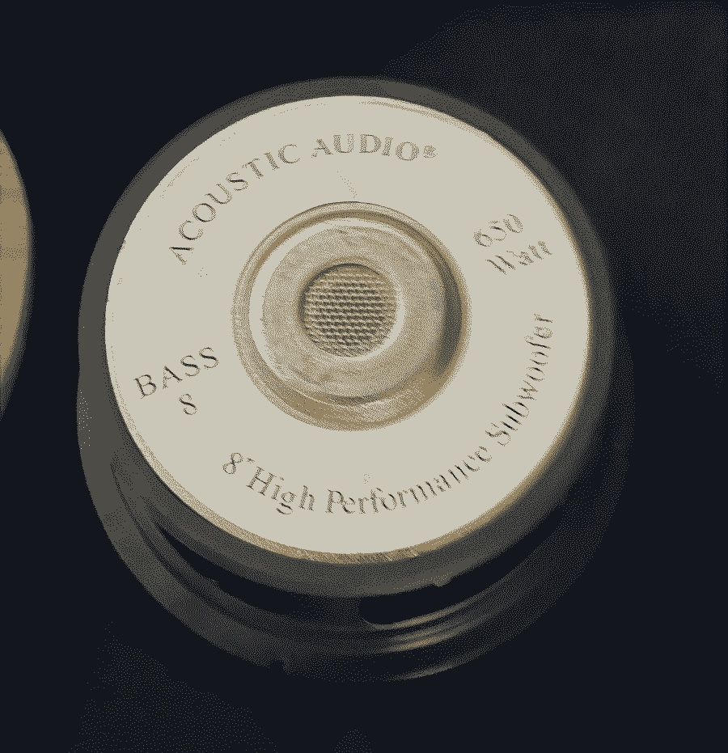

Building HiFi Speakers
Right now I'm building these hifi open baffle hybrid speakers from sub drivers that Hoolihan dropped off at the studio, mid range Page drivers that were used at PA speakers in the ceilings at my studio probably in the offices that occupied the space in the 90s and early 2000s, and tweeters Eli harvested from some studio monitors. This is my first HiFi Build and I'm doing it right, trying to build a nice crossover and everything, I was quad amping it for a while, using my modular to make crossover filters before the amp. The page drivers are open baffle and the BASS (bad ass serious sub) drivers are in a closed box, with no port. Matt Azevedo is helping me do the calculations, I need a windows computer to run Hornresp and RoomEQWizard. And i need to order some more parts for the crossover, but I've harvested some power caps and inductors from old speaker cabinets in the basement of the Firehouse. I'm learning a lot about crossover design and speaker impedance. The page drivers had transformers on the back of them that made me think that they would be a super high impedance but they ended up just being 8ohms. I have been looking at a lot of Japan HiFi Audio listening rooms with crazy compression drivers for the whole system, connected to these insane sculptural horns that spiral the house into the attic to make the length of the horn for bass response and I want to build something like that for my architecture thesis.




